Identidad visual
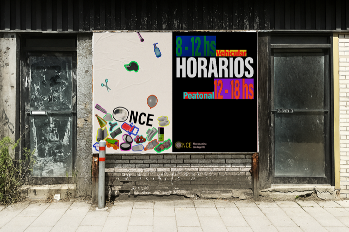
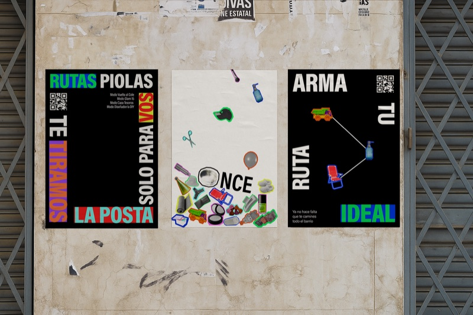
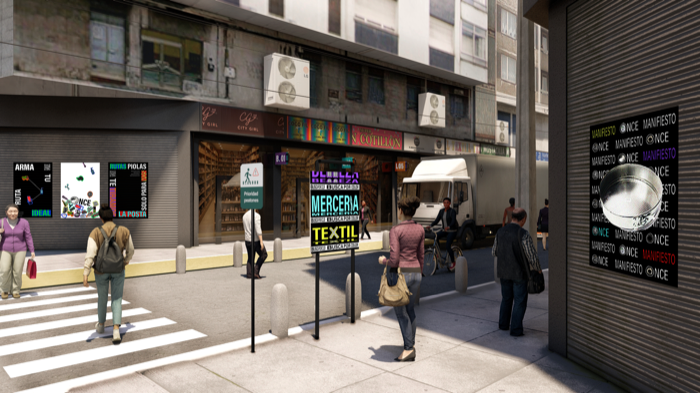
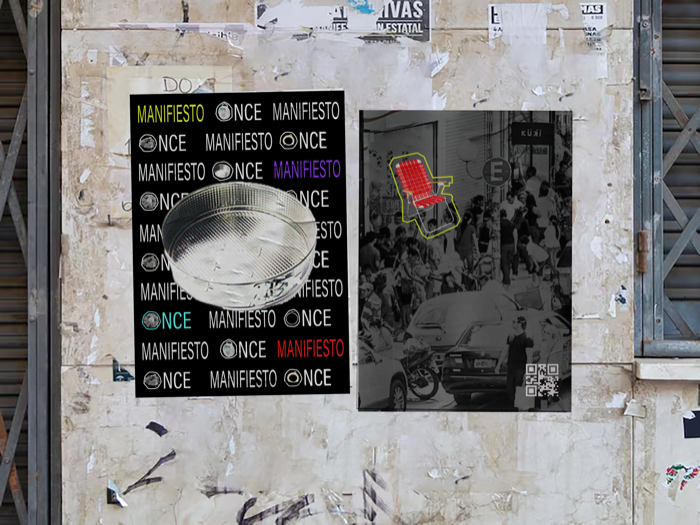
¿Qué significa vender en Once y cómo esa lógica moldea su identidad comercial?
La forma de vender es directa, casera y espontánea. Los vendedores crean sus propios sistemas de comunicación: carteles improvisados y escritos a mano que buscan ser entendidos al instante. Esa repetición genera una especie de lenguaje propio del barrio.
Este mismo lenguaje visual que ya existe en Once —ese que mezcla lo informal, lo rápido y lo efectivo— lo usamos como herramienta de comunicación para difundir nuestro proyecto.
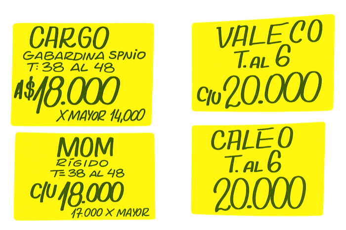
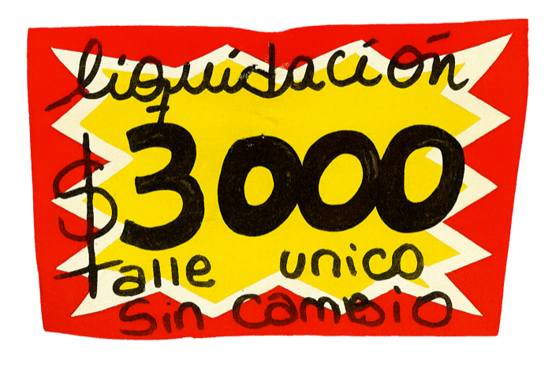
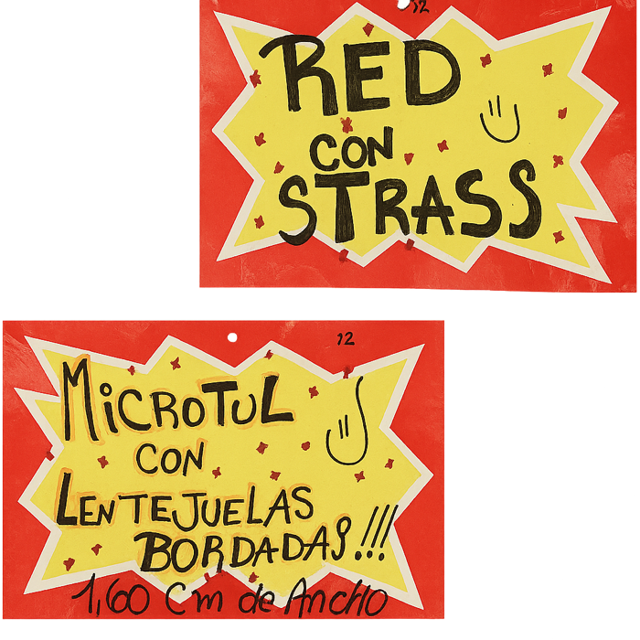
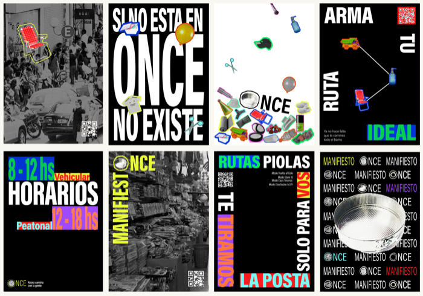
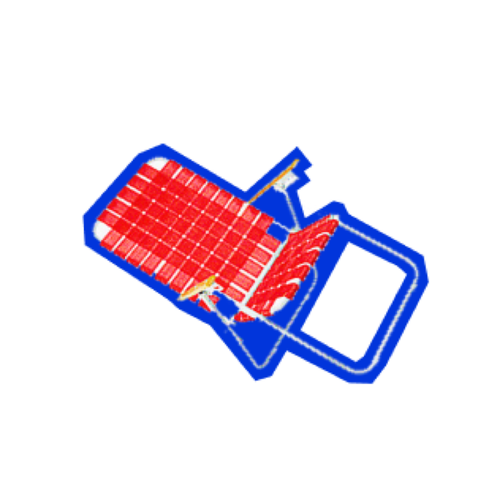
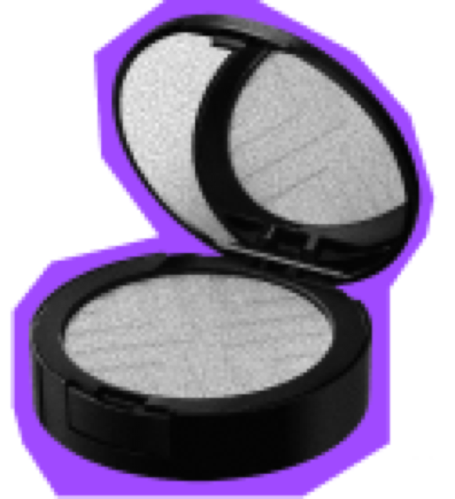
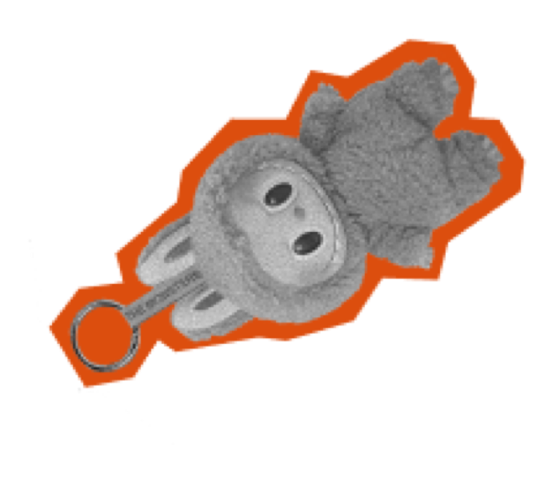
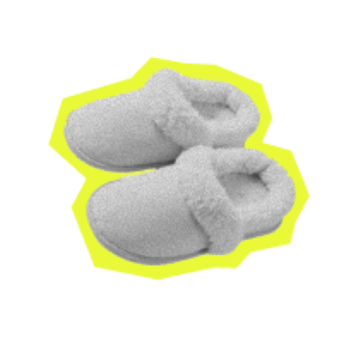
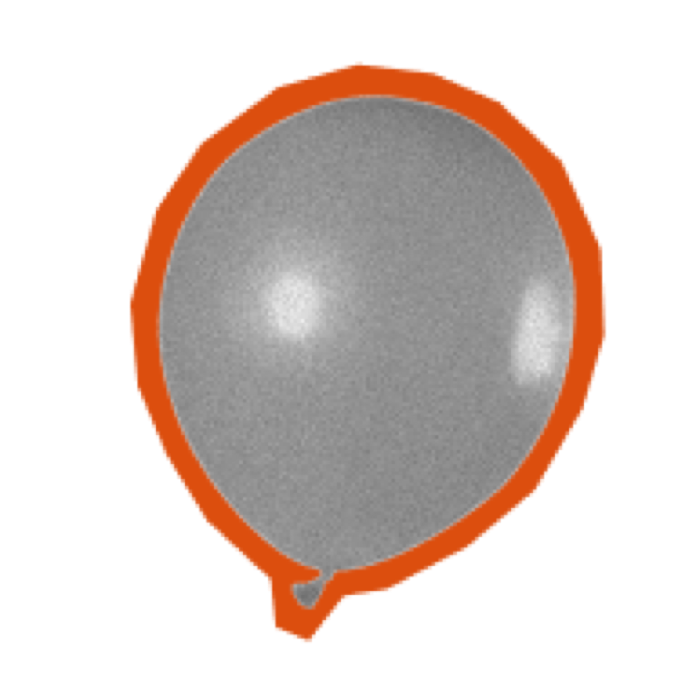